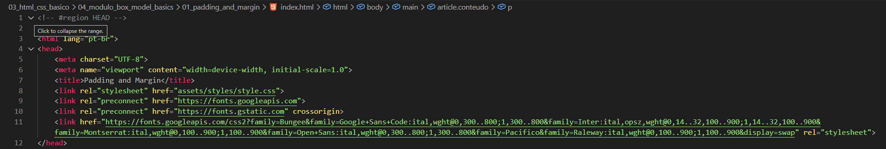
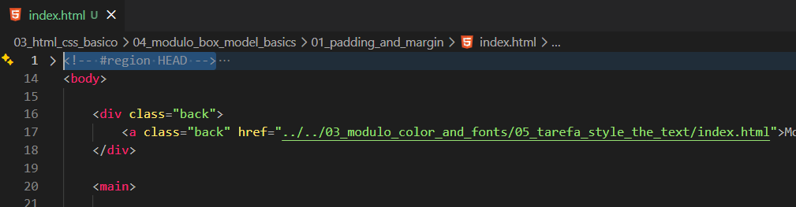
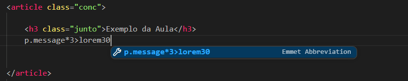

Padding and Margin
Intro
Agora iremos aprender a usar o CSS para aprender a construir um modelo de bloco.
Agora iremos aprender a usar o CSS para aprender a construir um modelo de bloco.
Tem uma forma que podemos estar usando para diminuir a regiao de nosso codigo que desjeamos, para isso podemos usar um comentario da seguinte forma < !-- #regiao nome desejado(HEAD) -- >, fazendo isso sera habilitado podermos estar diminuindo a parte desejada. Ficando da seguinte forma:


Iremos criar um atalho para iniciar aula da seguinte forma:
